Agent-centric-real-to-sim · 归档于 2026-11-05
PhysTwin
PhysTwin: Physics-Informed Reconstruction and Simulation of Deformable Objects from Videos
归档到 Agent-centric real-to-sim：把可变形物体的视频变成可仿真的 digital twin（这篇本身没有 agent）；第二相关 Sim-robot-learning（Warp 上的可微 spring-mass 模拟器）。
TL;DR
- Problem
- 3 路 RGB-D 视频里只有一次手部交互，却要得到一个几何完整、外观真实、能接新动作的可变形物体 twin；物体看不全，部分物理参数还不可微。
- Idea
- spring-mass 管物理，TRELLIS 补几何，Gaussian 管渲染；先用 CMA-ES（zero-order）搜拓扑和少量全局参数，再用可微模拟器（first-order）调每根弹簧的刚度和 collision 参数，最后只用第一帧拟合 Gaussian。
- Result
- Future Prediction 的 IoU 72.5% vs GS-Dynamics 49.8%、Spring-Gaus 46.4%（Table 1）；没见过的动作上 Chamfer 0.013 vs GS-Dynamics 0.029（Table 2）。机器人应用只有定性 demo。
Problem
一段视频只露出物体的一部分和一种动作，却要反推整个物体的物理
Running example · 后面每个 stage 都跟着它走
毛绒树懒（Fig. 2、Fig. 8 和 Supp. C 的例子）：桌上一只 sloth toy，3 台 RealSense-D455 RGB-D 相机，一只手提起它的一条肢体（项目页叫 Single lift sloth，85 帧 · 2.83 s · 30 FPS）→ 想要：一个 twin，能 ① 重放这段动作，② 预测最后 30% 的帧，③ 换成双手拉伸这种没见过的动作也能仿真，④ 用键盘实时玩。
flowchart TD IN["例子输入
3 路 RGB-D
单手提树懒"]:::example IN --> A1["Dynamic NeRF / 3DGS
拟合看到的每一帧"] A1 --> AX["没有物理
接不了新动作
论文没跑这组"]:::gap IN --> B1["Spring-Gaus
spring-mass + Gaussian
论文给它补了手和 shape"] B1 --> BX["物理模型常常崩
Future IoU 46.4
新动作未评测"]:::gap IN --> C1["GS-Dynamics
GNN 学 dynamics
只有这一段视频"] C1 --> CX["预测趋于不动
Future IoU 49.8
新动作 IoU 63.4"]:::gap
数字是 22 个场景的均值（Table 1、Table 2），论文没有单独报树懒。第 1 条出自 §1、§2 的论述，论文没做实验；第 2、3 条的现象出自 Fig. 3 的 caption："GS-Dynamics tends to remain static, while Spring-Gauss frequently causes the physical model to crash"。Spring-Gaus 的数字只算成功的 case（§5.1）。
根本问题：几何看不全、弹簧有上万根、拓扑和接触又不可微，一次交互既不够训练网络，也没法直接梯度下降。 这篇的切入点：物理用显式模型不用学；几何和运动借基础模型补；优化拆成低维 zero-order 和高维 first-order 两步。
Related work
| 相关工作 | 解决什么 | 怎么解决 | 和本文的区别 |
|---|---|---|---|
| 同一问题 · 别的解法 | |||
| Spring-Gaus Zhong et al., ECCV 2024（论文称最接近） | 从视频重建弹性物体并仿真 | 3D spring-mass + Gaussians，物体主要靠重力和碰撞变形 | 过度正则、违反动量和重力、要 dense 视角、没有 action 输入 → 本文 3 视角 + shape prior + control points |
| Learned dynamics GS-Dynamics、GNS、MeshGraphNets、RoboCraft、RoboCook | 学物体在动作下怎么动 | 图网络从数据学 dynamics；GS-Dynamics 从真实视频的 Gaussian track 学 | 要大量样本、局限在特定环境 → 本文不学网络，一次交互拟合 |
| 视频系统辨识 PAC-NeRF、NeuPhysics、Virtual Elastic Objects、PhysDreamer；手填参数的 PhysGaussian、PIE-NeRF、VR-GS | 把物理放进 NeRF / SDF / Gaussian 表示 | 可微仿真估参数，或手工指定参数 | 限于合成数据、有限运动或 dense 视角，手填的和实物对不上 → 本文在真实 sparse 视频上估每根弹簧 |
| 预扫描 + 可微仿真 DiffPD、ADD、DiSECt、gradSim、RISP | 静态物体的物理参数辨识 | 可微物理对齐干净的观测 | 要预扫描形状和干净点云 → 本文用 TRELLIS 补全，只看局部 depth |
| 相似做法 · 别的问题 | |||
| Dynamic NeRF / 3DGS D-NeRF、Deformable 3D-GS、Dynamic 3D-GS、4D-GS | 动态场景的新视角合成 | deformation field，或逐帧移动 Gaussian | 只重现看过的运动，不能按动作预测 → 本文 Gaussian 只当渲染层，运动由模拟器算 |
来源：论文 §1、§2 Related Works、§5.1 Baselines、Supp. C，未另行检索。
Level 1 · Big picture
把造 twin 写成反问题：调模型参数，直到仿真和视频对上
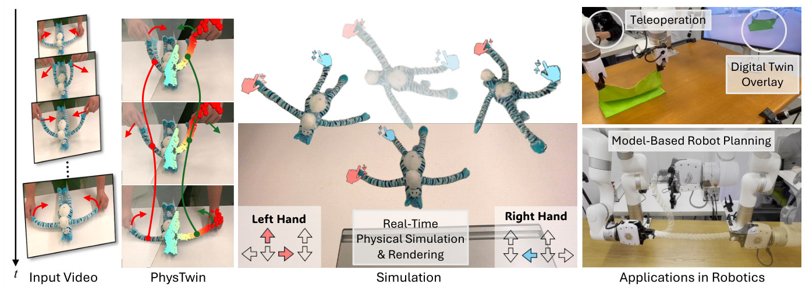
怎么读这张图
- 左 "Input Video"：时间轴 t 向下，两只手拉玩偶的四肢。这就是输入；我们的例子换成单手提树懒。
- "PhysTwin"：彩色点是物体上被跟踪的点，红点是手部 control points，红绿两条线是两只手走过的路径。这些就是 Stage 1 的产物。
- "Simulation"：Left Hand / Right Hand 的方向键直接移动两只虚拟手，玩偶实时跟着变形（"Real-Time Physical Simulation & Rendering"），对应 Stage 6。
- "Applications in Robotics"：上面 Teleoperation 配 "Digital Twin Overlay"，下面 Model-Based Robot Planning 拉绳子。论文里这两项都只有定性展示，见 E3。
flowchart LR I["Input
3 路 RGB-D
单手提树懒"]:::example --> M["Inverse modeling
仿真 ↔ 视频
几何 · 物理 · 外观"] M --> O["PhysTwin
双手拉也能仿真"]:::win
它到底要什么输入
| 输入 | 具体是什么 | 依据 |
|---|---|---|
| 3 路 RGB-D 视频 | 3 台 RealSense-D455，每段 1–10 s，含单手或双手的提、拉、推、挤 | §5.1 |
| 相机内外参 | 论文没提，但 3 路 depth 必须进同一坐标系；官方数据每个 case 自带 calibrate.pkl 和 metadata.json | 代码 README |
| 动作 = 视频里的手 | 手的 3D 点就是动作 at，不要力或触觉传感器 | §4.2.1、§5.1 |
| 物体类别词 | 论文没提；代码把 sloth.hand 这样的词作为 Grounded-SAM2 的 text prompt | 代码 process_data.py |
| 现成模型 | Grounded-SAM2、CoTracker3、TRELLIS、super-resolution 模型、SuperGlue，全部直接用，不重新训练 | §4.2.1、Supp. A |
| 不需要 | 预扫描 mesh、dense 视角、材料标注、成批训练数据（只要一次交互） | §1、§2 |
Level 2 · Stages
6 个 stage：准备两步、物理两步、外观一步、使用一步
论文的 "stage" 有两层：§4.2 的 two-stage 指物理和几何 / 外观；§4.2.1 里的 first / second stage 又指 zero-order / first-order。本页统一编号 1–6。
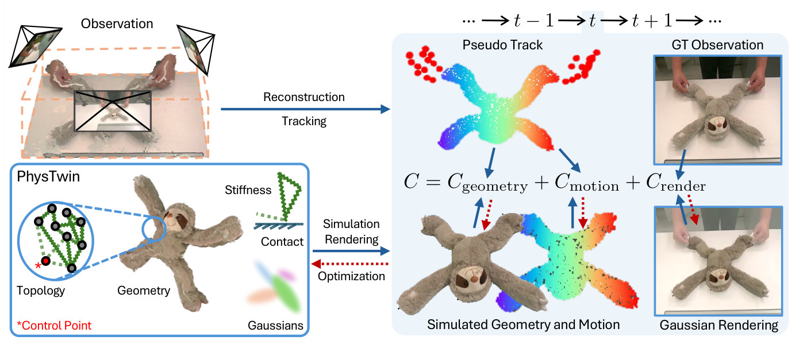
符号表
| 符号 | 白话 | 树懒例子里 |
|---|---|---|
| Ot,i = (I, D) | 相机 i 在时刻 t 拍到的 RGB 图和 depth 图 | 3 路里的一帧 |
| Xt / X̂t | 观测到的局部点云 / 模拟器算出的完整状态 | 看得到的毛绒表面 / 所有质点 |
| xti / x̂ti | 第 i 个点的观测位置 / 预测位置 | track 上的一个点 |
| G = (V, E) | 一张图：质点和连接它们的弹簧 | 树懒内部的弹簧网 |
| G0 | "canonical" 的几何和拓扑，实际取第一帧 | 手刚碰到时的树懒 |
| kij, lij | 弹簧的硬度、自然长度 | 每根弹簧各一个硬度 |
| γ, δ | 两个点相对运动的阻尼（dashpot）、整体减速的阻尼（drag） | 让弹簧不一直抖 |
| α | 全部物理参数：stiffness、collision、damping、手和物体的连接方式。§4.2.2 又用 α 指 opacity，两者无关 | 要反推的物理 |
| at | 时刻 t 的动作，就是 control points 的位置 | 手的点云 |
| θ | 全部 Gaussian 的外观参数 | 毛绒的颜色和表面 |
| fα,G₀ / gθ | 模拟器走一步 / 把状态画成图 | — |
怎么读这张图
- 左上 "Observation"：3 个相机围着桌子，3 路 depth 融成彩色点云，就是全部输入。
- 蓝箭头 "Reconstruction / Tracking" → "Pseudo Track"：彩虹点是物体上被跟踪的 3D 点，红点是手的 control points。"Pseudo" 指它是 CoTracker3 的预测，不是真值。
- 左下 "PhysTwin" 框：这是要求的四样东西。放大圈里黑点是质点、绿色弹簧是 Topology，带 * 的红点是 Control Point，虚线弹簧把它接到物体；另外是 Geometry、Stiffness、Contact、Gaussians。
- 中间两支箭头：蓝实线 "Simulation Rendering" 是前向，红虚线 "Optimization" 是反向。
- 右侧 C = Cgeometry + Cmotion + Crender：第一项比形状，第二项比点的位置，第三项比图像。caption 写明：只有 rendering loss 优化 Gaussians，geometry 和 motion loss 才动 geometry、topology 和物理。图像误差不回传到物理。
flowchart TD IN["Input
3 路 RGB-D + 标定"]:::example IN --> S1["1 · Perception
3D track + 手的点"] IN --> S2["2 · Shape prior
TRELLIS 补全树懒"] S1 --> S3["3 · Zero-order
CMA-ES：拓扑 + 全局值"]:::win S2 --> S3 S3 --> S4["4 · First-order
每根弹簧 + collision"]:::win S4 --> S5["5 · Appearance
第一帧拟合 Gaussian"] S5 --> S6["6 · Use
双手拉、键盘、规划"] click S1 href "#stage-1" click S2 href "#stage-2" click S3 href "#stage-3" click S4 href "#stage-4" click S5 href "#stage-5" click S6 href "#stage-6"
点击 stage 展开 Level 3 细节；模型方程和总目标见 贯穿全程的模型和 cost。
什么在哪一步优化
依据一列写"代码"的内容，论文没有写，来自官方代码（main@81c7187，cma_optimize_warp.py、trainer_warp.py）；当前代码不一定等于论文当时的版本。
| 变量 | 3 · Zero-order | 4 · First-order | 依据 |
|---|---|---|---|
| 物体弹簧的拓扑 连接半径、最大邻居数 | 搜 | 冻结 | 论文 §4.2.1 |
| 手和物体的连接 control 半径、最大邻居数 | 搜 | 冻结 | 论文 §4.2.1 |
| Spring stiffness | 搜 1 个全局值 homogeneous | 每根弹簧 1 个 tens of thousands | 论文 §1、§4.2.1 |
| Collision 参数 物体-外部、物体-物体的弹性和摩擦 | 搜 | 再调 | 论文 §1、§4.2.1；分项来自代码 |
| Collision 距离 | 搜 | 冻结 | 代码；论文没点名 |
| 阻尼 γ、δ | 搜 | 冻结 | 代码；论文只说属于 α |
| 质点质量 mi | 不优化：代码里每个质点都是 1 | 代码；论文没说 | |
| 完整几何 | Stage 2 已定，论文说之后优化 "the remaining parameters" | 论文 §4.2.1 | |
| Gaussians θ | 不参与，Stage 5 才优化 | 论文 §4.2.2 | |
| 3 · Zero-order | 4 · First-order | 5 · Appearance | |
|---|---|---|---|
| 方法 | CMA-ES，采样，不要梯度 | 自建可微 spring-mass 模拟器，梯度下降 | Gaussian 优化 |
| Cost | Cgeometry + Cmotion（Eq. 3） | 同左 | Crender = L1 + D-SSIM（Eq. 4） |
| 用哪些帧 | 训练帧 | 训练帧 | 只用 t = 0 |
| 维度 | 12 维（代码） | 上万根弹簧（论文）+ 4 个 collision 值（代码） | 全部 Gaussian |
Level 3 · Details
每个 stage 的细节
贯穿全程 Spring-mass 模型和总目标 所有 stage 共用的模型 f 和 cost C
- 受力（Eq. 1）：质点 i 的合力 = 相连弹簧的力 + 这些弹簧的阻尼力 + 外力。
- 弹簧力：Fspringi,j = kij(‖xj − xi‖ − lij) · (xj − xi) / ‖xj − xi‖。比自然长度长就往回拉。
- 阻尼力：Fdashpoti,j = −γ(vi − vj)。消耗能量，防止振荡。
- 外力：重力、碰撞、用户交互。碰撞用 impulse-based 处理，两个质点很近时触发，物体与碰撞体、物体自身都算。
- 积分：vt+1 = δ(vt + Δt·F/m)，xt+1 = xt + Δt·vt+1。论文称 explicit Euler。代码 dt = 5e-5，每个 30 FPS 视频帧 667 个子步。
- 总目标（Eq. 2）：调 α、G0、θ，让所有时刻、所有相机的预测观测和真实观测的差 C 最小，约束是状态必须由模拟器一步步算出来。
- Cgeometry：单向 Chamfer 距离：观测到的点要落在模拟的物体上，反过来不要求。原因应该是背面没有观测（我的推断）。
- Cmotion：预测点 x̂ 和 3D track x 的误差。
- 代码多一项：权重 0.01 的 acceleration 项，论文的 cost 里没有写。
flowchart LR a["动作 a_t
手的点移动"] --> b["模拟器 f
弹簧 + 碰撞 + 积分"] b --> c["状态 X̂_t+1
树懒的肢体被提起"]
Running example 在这一步
手的 control points 按视频移动，通过弹簧拉动物体点；树懒的其余部分靠弹簧传力、靠重力下垂、靠碰撞留在桌面上。这三件事都由同一个模拟器算，所以换一个动作不用重新学（Stage 6）。
Stage 1 Perception 3 路 RGB-D → 局部点云 X_t、3D pseudo track、手的 control points
- Why：depth 只给每帧的局部点云，没有点和点的对应，也没有"动作"。
- 点云：每帧 depth → 局部 3D 点云 Xt。
- 物体 track：CoTracker3 在图像上跟踪，再用 depth 反投影到 3D，作 pseudo-GT。论文自己称它为 noisy。
- 手：Grounded-SAM2 分出手的 mask → CoTracker3 跟踪 → 抬到 3D → farthest-point sampling，得到 control points。
flowchart LR a["Grounded-SAM2
树懒 mask · 手 mask"] --> b["CoTracker3
2D track"] b --> c["depth 反投影
3D track + 手的点"]
Running example 在这一步
85 帧 × 3 路 → 树懒物体点的 3D track，以及一小团跟着手走的 control points。按 7:3 切分，前约 59 帧用来拟合，后约 26 帧留作 future（我的换算：代码取前 70% 帧做训练）。
Stage 2 Generative Shape Prior 第一帧 RGB → 和第一帧观测对齐的完整 mesh
- Why：3 个视角看不到背面和被手挡住的部分，而弹簧要长在整个物体上。
- 生成：Grounded-SAM2 取前景 → super-resolution 放大 → TRELLIS 从单张图生成完整 mesh。
- 问题：生成的 mesh 大致像，但 scale、pose 和形变都和观测有差。
- 粗旋转：球面上均匀放虚拟相机渲染 mesh，SuperGlue 和真实图做匹配，取匹配最多的视角。
- 精旋转：对匹配点跑 PnP。
- 尺度：PnP 之后匹配点都在过相机原点的同一条线上，所以平移和尺度合并成只优化尺度。
- 非刚性：as-rigid-as-possible 把 mesh 变形到观测的姿态。
- 收尾：ray-casting 对齐，让观测点既不被 mesh 挡住，也不挡住 mesh。
- 例外：代码的配置里 cloth 和 package 的 case 关掉了 shape prior，只有 rope 和玩偶类开着（
data_config.csv）；论文没提这一点。
flowchart TD a["TRELLIS
单图 → 树懒 mesh"] --> b["SuperGlue + PnP
旋转"] b --> c["优化尺度
距离对齐"] c --> d["ARAP + ray-casting
贴合第一帧姿态"]
Running example 在这一步
第一帧里能看到的只有树懒朝上的一面，TRELLIS 把背面补出来，再对齐到桌上的这个摆放姿势（Fig. 2 的 "Geometry"）。它既是物理的初值，也是 Gaussian 的初值。
Stage 3 Zero-order：拓扑和全局参数 完整几何 + track + 手 → 弹簧图和一组全局物理参数
- Why：半径和邻居数决定弹簧连不连，不可微；zero-order 不需要梯度，但参数一多就没效率。
- 降维：先假设全物体只有一个 stiffness（homogeneous）。
- 拓扑规则：启发式，点和半径内的最近邻相连，最多连 N 个，以此控制弹簧密度；手的 control points 用同样规则接到物体点。
- 算法：CMA-ES。采一组参数 → 建弹簧 → 在训练帧上 rollout → 算 Eq. 3 → 更新采样分布。
- 12 维（代码）：全局 stiffness、物体半径（0.01–0.05）、物体邻居数（10–50）、control 半径（0.01–0.08）、control 邻居数（10–80）、4 个 collision 弹性和摩擦、collision 距离（0.01–0.05）、drag（0–20）、dashpot（0–200）。默认 20 代。
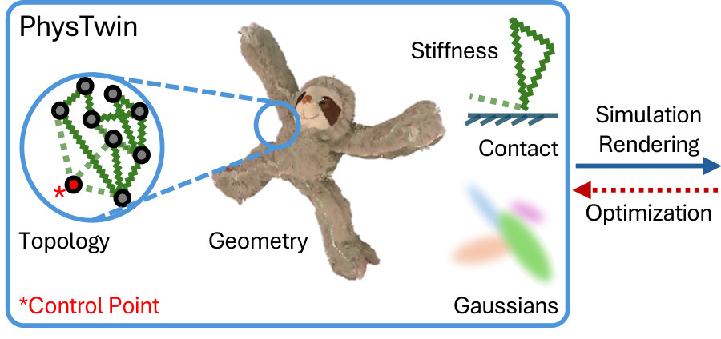
flowchart TD a["CMA-ES 采样
12 维的一组值"] --> b["建弹簧 + rollout
手走完训练帧"] b --> c["打分
C_geometry + C_motion"] c --> d["更新采样分布"] d --> a
Running example 在这一步
每个候选都是一只"全身一样硬"的树懒，手按记录提起肢体，看它的下垂和 track 差多少。论文没报树懒最后得到的值。
Stage 4 First-order：每根弹簧的刚度 Stage 3 的结果 → 每根弹簧一个 stiffness，collision 再细调
- Why：要表示各种物体就需要 dense stiffness，维度到上万，zero-order 处理不了。
- How：自建的可微 spring-mass 模拟器（实现用 Warp），对 dense stiffness 和 collision 参数同时做梯度下降，cost 仍是 Eq. 3。
- 拓扑：Stage 3 定下后不再改，所以不可微的问题在这里不存在。
- 代码细节：Adam，lr 1e-3，200 轮（cloth 和 package 100 轮）；stiffness 在 log 空间优化，上限 1e5。
- 梯度长度（我读代码的结论）：每个视频帧做一次 backward 和一次 Adam 更新，帧之间的状态只是拷贝，所以梯度不穿过整段 rollout。这和 §4.2 提到的 long time horizon 难题对得上，论文没写这个做法。
flowchart LR a["Stage 3 结果
k 全身相同"] --> b["可微 rollout
Eq. 3 的梯度"] b --> c["Dense stiffness
每根弹簧各一个 k"]:::win
Running example 在这一步
全身一样的 k 展开成每根弹簧一个值，再贴着 3D track 下降。论文没有给树懒的弹簧数，也没有展示 stiffness 分布图；项目页只提到代码里有 material 可视化工具。
Stage 5 Appearance 第一帧 3 路图像 → 静态 Gaussians；运行时跟着质点变形
- Why：质点只管位置，看起来像实物要靠 Gaussian。
- 参数 θ：每个 Gaussian 有中心 μ、旋转 q、尺度 s、opacity、颜色 c，从第一帧的 sparse 观测和 shape prior 初始化。
- 优化（Eq. 4）：L1 + D-SSIM。为了简单，只在 t = 0 优化。
- 各向同性：Gaussian 形状限制为 isotropic，防止形变时出现尖刺。
- 运动（Supp. B）：先由相邻质点的运动解出每个质点的局部旋转（Eq. 5），再用 Linear Blend Skinning 把 K 个最近质点的变换按距离倒数加权到每个 Gaussian（Eq. 6–8）。
flowchart LR a["第一帧 3 路
拟合静态 Gaussian"] --> b["LBS
跟随邻近质点"] b --> c["渲染
肢体提起后的图像"]
Running example 在这一步
Gaussian 只见过第一帧的树懒。肢体被提起时，外观完全靠这组 Gaussian 被 LBS 带着走；第一帧看不到的区域，论文只说由 shape prior 初始化。
Stage 6 Use the twin PhysTwin + 新的 control points → 新动作下的状态和图像
- 新动作：加入 control points，把它们动态地用弹簧接到物体点上，就能模拟不同运动（§4.3）。
- 新的起始姿态：用 Stage 2 的 registration 把 twin 对齐到目标视频的第一帧，物理不重新拟合（§5.2）。
- 键盘：单手或双手实时控制，模拟器用 Warp 实现。
- 遥操作：人操作机械臂时，实时模拟物体未来的状态。
- 规划：作为 dynamics model 接到 model-based planning 上。论文没写是哪种 planner，代码 README 后来给了一个 MPPI 示例。
- 速度：论文写 real-time，但没报 FPS。代码 README 写树懒约 37 FPS（RTX 4090）。项目页标 "All Real-Time 1x"。
flowchart TD a["PhysTwin
单手视频建的树懒"] --> b["对齐第一帧
registration"] b --> c["新 control points
双手拉伸"] a --> d["键盘 / 机械臂
实时给 control points"]
Recap：例子覆盖了论文的哪些 idea
| 论文里的 idea | 例子里在哪体现 |
|---|---|
| Spring-mass 作为显式物理 | 贯穿全程：手拉 → 弹簧传力 → 肢体被提起、身体下垂 |
| 基础模型提供 pseudo-GT | Stage 1：CoTracker3 的 track 抬到 3D |
| 手作为 control points | Stage 1 提取，Stage 3 决定怎么接到物体 |
| 生成式 shape prior + registration | Stage 2：TRELLIS 补出树懒的背面 |
| Sparse-to-dense 分层优化 | Stage 3：全身一样硬的树懒；Stage 4：每根弹簧一个 k |
| Gaussian + LBS | Stage 5：第一帧拟合，运行时跟着质点走 |
| 泛化到没见过的动作 | Stage 6：单手视频 → 双手拉伸 |
| 实时交互 | Stage 6：键盘玩树懒 |
| 遥操作和规划 | 例子覆盖不到，论文用绳子和布，见 E3 |
Results
贴得更准、预测更远、换动作不掉；但比的全是几何和图像，没有速度和机器人成功率
顺序同论文的三个问题：E1 重放和未来预测 → E2 没见过的动作 → E3 下游应用；然后是补充材料：E4 分层优化的消融 → E5 track 质量 → E6 数据效率。全部比精度，论文不比时间。
E1重放这段视频、预测后面的帧，有多准？§5.2 · Q1
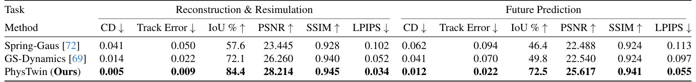
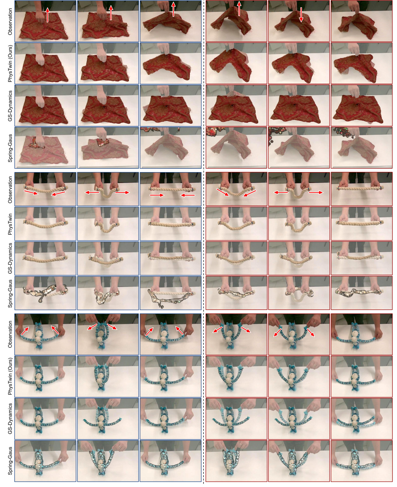
- 说明什么
- 两个任务所有指标都最好，未来帧上差距更大。重放：Chamfer 0.005 vs GS-Dynamics 0.014、Spring-Gaus 0.041；IoU 84.4 vs 72.1、57.6。未来：IoU 72.5 vs 49.8、46.4；Track Error 0.022 vs 0.070、0.094。
- 在故事里
- 证明拟合出来的是物理，不只是把训练帧背下来。
- 指标
- 3D：单向 Chamfer（局部真实点云到完整预测状态）；Track Error（每段视频 9 个手工标注的点）。单位论文没写。
- 2D：PSNR、SSIM、LPIPS 看图像，IoU 看轮廓。只在中间视角评，因为物体可见性最好。
- 对所有帧和场景取平均；没有 seed 数或方差。
- 怎么评测
- 自采 22 个场景：rope、stuffed animals、cloth、delivery packages；视频 7:3 切成训练和测试，只用训练部分建 twin。
- 动作由 control points 给定；未来帧的手也要给（我的推断：§5.1 把动作定义为 control point 位置，没有别的来源）。
- Spring-Gaus：作者加了 control springs，并用本文的 shape prior 初始化；优化不稳定，只算成功的 case，这对它有利。
- GS-Dynamics：换成 CoTracker3 的 3D tracker，并加上本文的 Gaussian blending 来渲染。
- Fig. 9 有三个视角的定性图，没有数字。
E2换成没见过的动作，还准吗？§5.2 · Q2
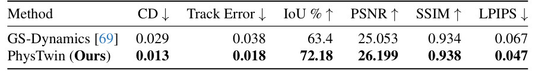
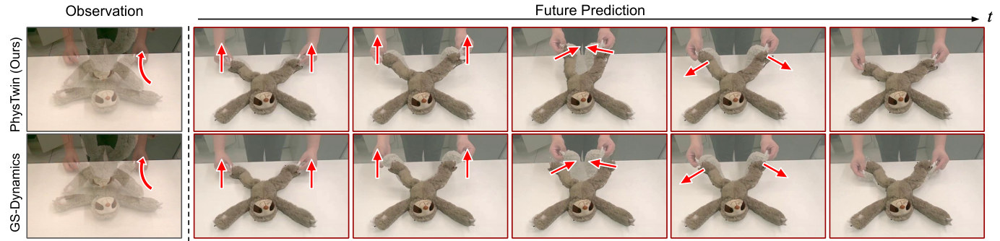
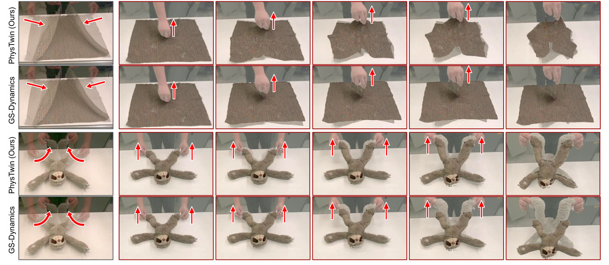
- 说明什么
- 未见动作上基本不掉，GS-Dynamics 差距明显。Chamfer 0.013 vs 0.029；Track Error 0.018 vs 0.038；IoU 72.18 vs 63.4。和自己 Table 1 的 future（0.012、0.022、72.5）相当。
- 在故事里
- 这是 twin 和 video reconstruction 的分界：模型能接它没见过的输入。
- 指标
- 同 E1。
- 怎么评测
- 同一物体的 11 对交互，正反两个方向，共 22 个实验。
- twin 只用源交互的训练部分构建，在目标交互的整段序列上评。
- 用 registration 把 twin 对齐到目标第一帧。
- Spring-Gaus 不参评：它的 Gaussian 不能适应不同的初始条件。
E3twin 对机器人有用吗？§5.3 · Q3
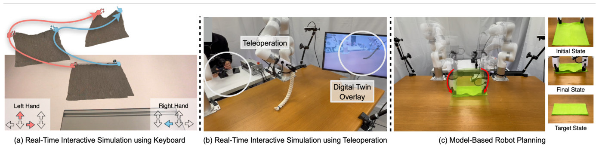
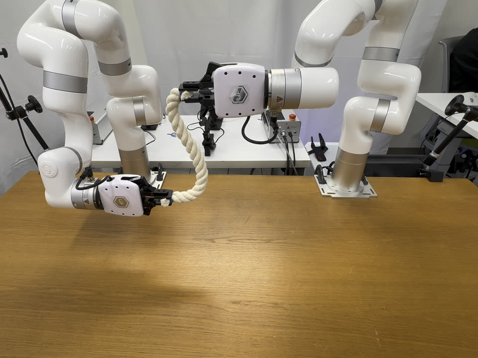
- 说明什么
- 只证明能跑通，没有数字。没有成功率、目标误差、闭环频率，也没有和别的 dynamics model 比。
- 在故事里
- 支撑 "real-time + 高保真 → 可以进规划回路" 这一句，属于展示。
- 指标
- 论文没有定义。
- 怎么评测
- Fig. 5 和项目页的绳子、布。
- 论文没写用的 planner、双臂怎么变成 control points、绳子的 twin 怎么对齐到机器人场景。
E4zero-order 和 first-order 真的都需要吗？Supp. C
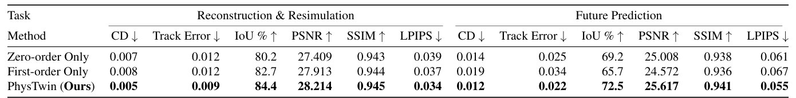
- 说明什么
- 两步都有用，完整方法全部最好。IoU：重放 84.4 vs Zero-only 80.2、First-only 82.7；未来 72.5 vs 69.2、65.7。
- 在故事里
- 这是分层优化唯一的证据。作者解释：Zero-only 抓不到细粒度材料差异；First-only 没法优化不可微的弹簧连接，默认连接不符合物体结构，control 连接距离也不能用固定值。
- 我的读法
- First-only 重放更好、未来更差，像是错误的拓扑下用 dense stiffness 过拟合了训练帧（推断）。
- Zero-only 的未来 IoU 69.2 已经远高于 GS-Dynamics 的 49.8。GS-Dynamics 用了同样的 CoTracker3 track 和 Gaussian blending，所以这部分优势主要来自显式物理，不是分层优化；first-order 再加 3.3（推断）。
- 指标
- 同 E1。
- 怎么评测
- 同样的两个任务；只改优化器。论文没说 First-only 的"默认连接"具体取什么值；代码的默认值是物体半径 0.02、control 半径 0.04。
E5track 比它的监督信号更好吗？§5.2 · Supp. C
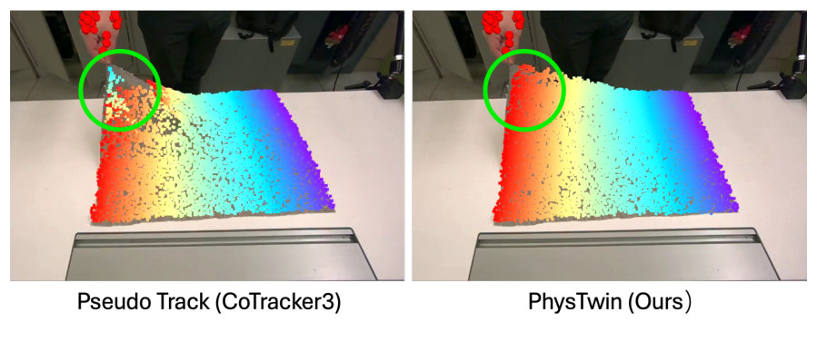
- 说明什么
- 物理约束能修掉 track 的噪声，但只有定性证据。论文说 surpass CoTracker3，没给 CoTracker3 的 Track Error。
- 在故事里
- 解释为什么带噪声的 pseudo-GT 够用：模拟器走不出物理上不可能的运动（我的解读）。
- 指标
- 无，看图。
- 怎么评测
- 一个布的案例。
E6给 GS-Dynamics 更多数据能追上吗？Supp. C
| 方法 | 训练数据 | 结果 |
|---|---|---|
| PhysTwin | 1 个 data point | — |
| GS-Dynamics | 30 个 data point（同一动作多采 29 个） | "does not show a performance boost" |
这张小表根据 Supp. C 的文字整理；论文没有给这个实验的数值表。
- 说明什么
- 30 倍数据也没帮上 GS-Dynamics，但只有一句话，没有数字。
- 在故事里
- 回应"baseline 只是数据不够"的质疑。
- 指标
- 论文未给。
- 怎么评测
- 一个物体、一个动作：双手拉伸和折叠绳子。
Limits
局限和开放问题
- 作者承认：现在要 3 路 RGB-D；单路 RGB 配合合适的 prior 是 future work（Supp. D）。
- 作者承认：物理只来自一种交互；多种动作才能把物体的内在属性估得更准（Supp. D）。
- 时间没有报：论文没有优化时长和 FPS。代码 README 写 stuffed animal 上 CMA-ES 约 12 分钟、first-order 约 5 分钟，不开 self-collision，这不是论文的结果。
- 机器人没有数字：规划和遥操作都是定性 demo，没有 sim-to-real 的量化证据。Supp. D 关于减少 domain randomization 的说法是展望，没做实验。
- 参数是拟合量，不是测量值（推断）：论文没有和真实材料值比过。代码里质量全是 1，所以 stiffness 只在这个约定下有意义。
- 抓取不是接触（推断）：手是用弹簧接到物体上的点，不是有摩擦的接触面，打滑和松手这类事件不在模型里；视频里手也要始终看得见。
- 覆盖范围（推断）：实验都是桌面上单个物体被手操作，没有两个物体互相作用，也没有塑性物体和流体。
For r2s-lite
对我们有什么用
- 质量和摩擦是假设值 → 可以试 Stage 3 的做法：几个全局参数用 CMA-ES 搜，cost 是 rollout 和 track 的差，我们已有 replay 和 SAM3 track。但一次采样就是一次完整 rollout，这里靠便宜的 Warp spring-mass，Isaac 回放贵得多（推断）；拟合出的也只是等效值，不是实测。
- 毛巾这类物体 → 这篇列出了缺什么：我们的动作来源更直接（记录的 flange 和夹爪，不用跟踪手），但它假设 3 路相机已标定，Chamfer 和 3D track 都直接建立在上面，DROID 差约 20 cm 的相机位姿必须先修好（推断）。另外它用弹簧接手，不是接触，不能直接搬到 Isaac 的夹爪上。
- 没有 sim-to-real 证据 → 可以先用它的评测设计：前 70% 帧拟合、后 30% 帧打分，再换同一物体的另一段动作，不用训练 policy 就能得到 held-out 证据。这仍然不是 sim-to-real，这篇的机器人部分也没有给出那种证据。